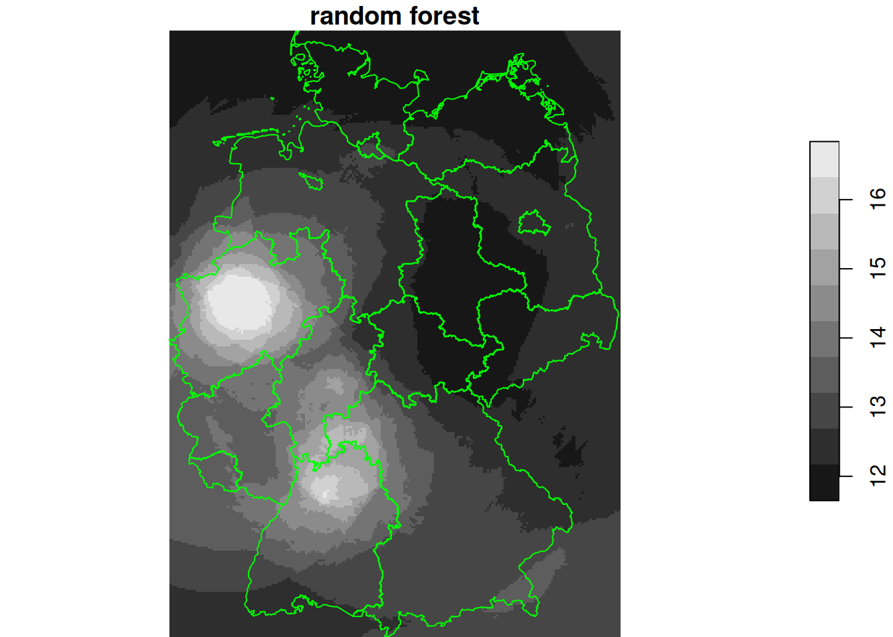
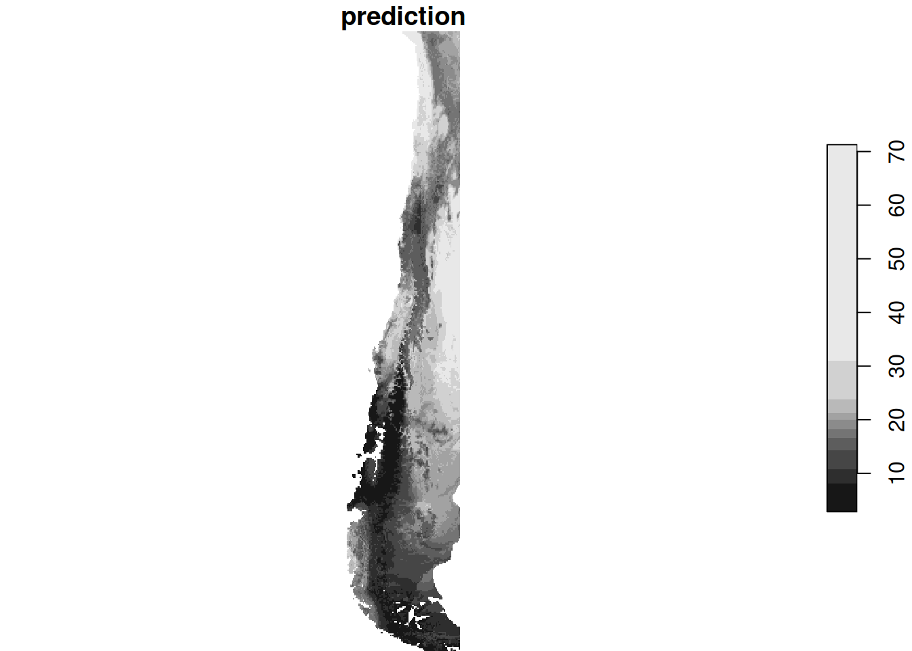
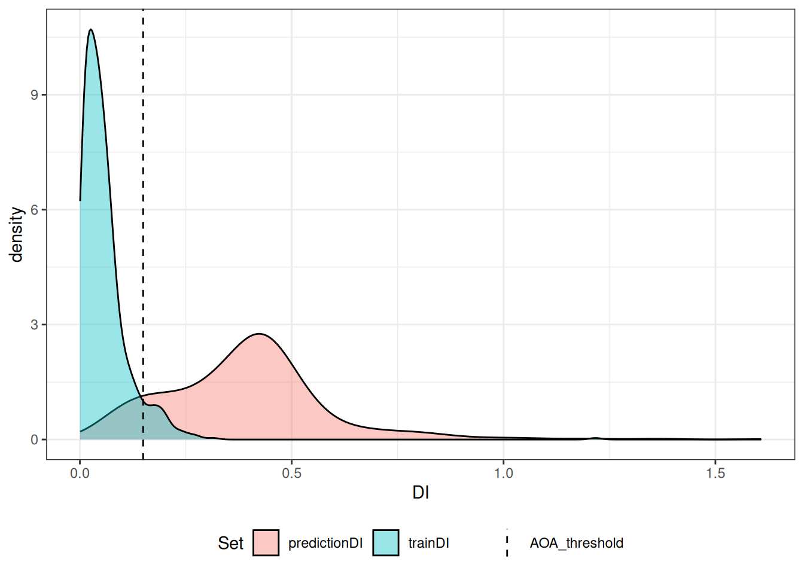

library(dplyr)
#
# Attaching package: 'dplyr'
# The following objects are masked from 'package:stats':
#
# filter, lag
# The following objects are masked from 'package:base':
#
# intersect, setdiff, setequal, union
library(sf)
# Linking to GEOS 3.12.1, GDAL 3.8.4, PROJ 9.4.0; sf_use_s2() is TRUE
crs <- st_crs("EPSG:32632") # a csv doesn't carry a CRS!
no2 <- read.csv(system.file("external/no2.csv",
package = "gstat"))
no2 |> rename(x = station_longitude_deg, y = station_latitude_deg) |>
st_as_sf(crs = "OGC:CRS84", coords =
c("x", "y"), remove = FALSE) |>
st_transform(crs) -> no2.sf
# we need to reassign x and y:
cc = st_coordinates(no2.sf)
no2.sf$x = cc[,1]
no2.sf$y = cc[,2]
head(no2.sf)
# Simple feature collection with 6 features and 21 fields
# Geometry type: POINT
# Dimension: XY
# Bounding box: xmin: 495000 ymin: 5320000 xmax: 816000 ymax: 5930000
# Projected CRS: WGS 84 / UTM zone 32N
# station_european_code station_local_code country_iso_code
# 1 DENI063 DENI063 DE
# 2 DEBY109 DEBY109 DE
# 3 DEBE056 DEBE056 DE
# 4 DEBE062 DEBE062 DE
# 5 DEBE032 DEBE032 DE
# 6 DEHE046 DEHE046 DE
# country_name station_name station_start_date
# 1 Germany Altes Land 1999-02-11
# 2 Germany Andechs/Rothenfeld 2003-04-17
# 3 Germany B Friedrichshagen 1994-02-01
# 4 Germany B Frohnau, Funkturm (3.5 m) 1996-02-01
# 5 Germany B Grunewald (3.5 m) 1986-10-01
# 6 Germany Bad Arolsen 1999-05-11
# station_end_date type_of_station station_ozone_classification
# 1 NA Background rural
# 2 NA Background rural
# 3 NA Background rural
# 4 NA Background rural
# 5 NA Background rural
# 6 NA Background rural
# station_type_of_area station_subcat_rural_back street_type x
# 1 rural unknown 545414
# 2 rural regional 665711
# 3 rural near city 815741
# 4 rural near city 790544
# 5 rural near city 786923
# 6 rural unknown 495007
# y station_altitude station_city lau_level1_code
# 1 5930802 3 NA
# 2 5315213 700 NA
# 3 5820995 35 NA
# 4 5842367 50 BERLIN NA
# 5 5822067 50 BERLIN NA
# 6 5697747 343 BAD AROLSEN/KOHLGRUND NA
# lau_level2_code lau_level2_name EMEP_station NO2
# 1 3359028 Jork no 13.10
# 2 9188117 Andechs no 7.14
# 3 11000000 Berlin, Stadt no 12.80
# 4 11000000 Berlin, Stadt no 11.83
# 5 11000000 Berlin, Stadt no 11.98
# 6 6635002 Bad Arolsen, Stadt no 8.94
# geometry
# 1 POINT (545414 5930802)
# 2 POINT (665711 5315213)
# 3 POINT (815741 5820995)
# 4 POINT (790544 5842367)
# 5 POINT (786923 5822067)
# 6 POINT (495007 5697747)
"https://github.com/edzer/sdsr/raw/main/data/de_nuts1.gpkg" |>
read_sf() |>
st_transform(crs) -> de4 Machine Learning methods applied to spatial data
Learning goals
Reading materials
From Spatial Data Science: with applications in R:
- Section 10.1: Mapping with non-spatial regression and ML models (you already read this)
From the stars vignettes:
- Statistical modelling with stars objects
Area of Applicability:
- this CAST vignette
- Machine learning-based global maps of ecological variables and the challenge of assessing them
Summary
- Intro to prediction with R
- (functions of) Spatial coordinates as predictors
- Spatially correlated residuals
- Area of applicability
- RandomForestsGLS: Random forests for dependent data
Summary
- Data: coverages as predictors
- Pitfalls: independence, known predictors, clustered data, different support / spatial unalignment
- Model assessment and transferrability: cross validation strategies, area of applicability
- RandomForestsGLS
4.1 Spatial coordinates as predictor
We’ll rename coordinates to x and y:
library(stars)
# Loading required package: abind
g2 = st_as_stars(st_bbox(de))
g3 = st_crop(g2, de)
g4 = st_rasterize(de, g3)
g4$ID_1[g4$ID_1 == 758] = NA
g4$ID1 = as.factor(g4$ID_1) # now a factor:
plot(g4["ID1"], reset = FALSE)
plot(st_geometry(no2.sf), add = TRUE, col = 'green')
no2.sf$ID1 = st_extract(g4, no2.sf)$ID1
no2.sf$ID1 |> summary()
# 753 754 755 756 759 760 761 762 763 764 765 766 767
# 4 8 3 4 10 6 6 6 6 1 6 5 1
# 768 NA's
# 6 2Simple ANOVA type predictor:
lm1 = lm(NO2~ID1, no2.sf)
summary(lm1)
#
# Call:
# lm(formula = NO2 ~ ID1, data = no2.sf)
#
# Residuals:
# Min 1Q Median 3Q Max
# -6.324 -1.599 -0.311 0.859 12.358
#
# Coefficients:
# Estimate Std. Error t value Pr(>|t|)
# (Intercept) 8.136 1.873 4.34 5.7e-05 ***
# ID1754 1.883 2.294 0.82 0.41
# ID1755 4.068 2.861 1.42 0.16
# ID1756 -1.593 2.649 -0.60 0.55
# ID1759 1.015 2.216 0.46 0.65
# ID1760 -2.215 2.418 -0.92 0.36
# ID1761 1.353 2.418 0.56 0.58
# ID1762 3.697 2.418 1.53 0.13
# ID1763 -1.724 2.418 -0.71 0.48
# ID1764 1.091 4.188 0.26 0.80
# ID1765 0.591 2.418 0.24 0.81
# ID1766 -2.282 2.513 -0.91 0.37
# ID1767 1.024 4.188 0.24 0.81
# ID1768 -2.358 2.418 -0.98 0.33
# ---
# Signif. codes: 0 '***' 0.001 '**' 0.01 '*' 0.05 '.' 0.1 ' ' 1
#
# Residual standard error: 3.75 on 58 degrees of freedom
# (2 observations deleted due to missingness)
# Multiple R-squared: 0.268, Adjusted R-squared: 0.104
# F-statistic: 1.63 on 13 and 58 DF, p-value: 0.102
g4$NO2_aov = predict(lm1, as.data.frame(g4))
plot(g4["NO2_aov"], breaks = "equal", reset = FALSE)
plot(st_cast(st_geometry(de), "MULTILINESTRING"), add = TRUE, col = 'green')
Simple linear models in coordinates: trend surfaces
lm2 = lm(NO2~x+y, no2.sf)
summary(lm2)
#
# Call:
# lm(formula = NO2 ~ x + y, data = no2.sf)
#
# Residuals:
# Min 1Q Median 3Q Max
# -6.880 -2.634 -0.991 1.431 11.660
#
# Coefficients:
# Estimate Std. Error t value Pr(>|t|)
# (Intercept) 9.47e+00 1.36e+01 0.70 0.49
# x -3.66e-06 3.00e-06 -1.22 0.23
# y 1.91e-07 2.45e-06 0.08 0.94
#
# Residual standard error: 3.95 on 71 degrees of freedom
# Multiple R-squared: 0.0212, Adjusted R-squared: -0.00637
# F-statistic: 0.769 on 2 and 71 DF, p-value: 0.467
cc = st_coordinates(g4)
g4$x = cc[,1]
g4$y = cc[,2]
g4$NO2_lm2 = predict(lm2, g4)
plot(g4["NO2_lm2"], breaks = "equal", reset = FALSE, main = "1st order polynomial")
plot(st_cast(st_geometry(de), "MULTILINESTRING"), add = TRUE, col = 'green')
lm3 = lm(NO2~x+y+I(x^2)+I(y^2)+I(x*y), no2.sf)
summary(lm3)
#
# Call:
# lm(formula = NO2 ~ x + y + I(x^2) + I(y^2) + I(x * y), data = no2.sf)
#
# Residuals:
# Min 1Q Median 3Q Max
# -5.480 -2.583 -0.585 1.523 12.750
#
# Coefficients:
# Estimate Std. Error t value Pr(>|t|)
# (Intercept) -4.24e+02 3.27e+02 -1.30 0.199
# x 1.34e-04 9.13e-05 1.47 0.147
# y 1.39e-04 1.14e-04 1.21 0.230
# I(x^2) 2.52e-11 1.91e-11 1.32 0.190
# I(y^2) -1.06e-11 1.01e-11 -1.05 0.296
# I(x * y) -2.96e-11 1.65e-11 -1.79 0.077 .
# ---
# Signif. codes: 0 '***' 0.001 '**' 0.01 '*' 0.05 '.' 0.1 ' ' 1
#
# Residual standard error: 3.87 on 68 degrees of freedom
# Multiple R-squared: 0.0972, Adjusted R-squared: 0.0308
# F-statistic: 1.46 on 5 and 68 DF, p-value: 0.213
g4$NO2_lm3 = predict(lm3, g4)
plot(g4["NO2_lm3"], breaks = "equal", reset = FALSE, main = "2nd order polynomial")
plot(st_cast(st_geometry(de), "MULTILINESTRING"), add = TRUE, col = 'green')
lm4 = lm(NO2~x+y+I(x^2)+I(y^2)+I(x*y)+I(x^3)+I(x^2*y)+I(x*y^2)+I(y^3), no2.sf)
summary(lm4)
#
# Call:
# lm(formula = NO2 ~ x + y + I(x^2) + I(y^2) + I(x * y) + I(x^3) +
# I(x^2 * y) + I(x * y^2) + I(y^3), data = no2.sf)
#
# Residuals:
# Min 1Q Median 3Q Max
# -5.285 -2.582 -0.796 2.074 12.693
#
# Coefficients:
# Estimate Std. Error t value Pr(>|t|)
# (Intercept) 3.38e+03 9.12e+03 0.37 0.712
# x 5.15e-03 2.50e-03 2.06 0.043 *
# y -2.40e-03 4.84e-03 -0.49 0.622
# I(x^2) -1.19e-09 7.46e-10 -1.60 0.115
# I(y^2) 5.15e-10 8.59e-10 0.60 0.551
# I(x * y) -1.54e-09 8.57e-10 -1.80 0.077 .
# I(x^3) 1.13e-16 1.31e-16 0.86 0.394
# I(x^2 * y) 1.80e-16 1.38e-16 1.30 0.197
# I(x * y^2) 1.14e-16 7.75e-17 1.47 0.146
# I(y^3) -3.49e-17 5.10e-17 -0.68 0.496
# ---
# Signif. codes: 0 '***' 0.001 '**' 0.01 '*' 0.05 '.' 0.1 ' ' 1
#
# Residual standard error: 3.82 on 64 degrees of freedom
# Multiple R-squared: 0.173, Adjusted R-squared: 0.0572
# F-statistic: 1.49 on 9 and 64 DF, p-value: 0.17
g4$NO2_lm4 = predict(lm4, g4)
plot(g4["NO2_lm4"], breaks = "equal", reset = FALSE, main = "3rd order polynomial")
plot(st_cast(st_geometry(de), "MULTILINESTRING"), add = TRUE, col = 'green')
Breakout session 1
Discuss:
- how will the predicted surface look like when instead of (functions of) coordinates, the variable elevation is used (e.g. to predict average temperatures)?
- what will be the value range, approximately, of the resulting predicted values?
regression tree
library(rpart)
tree = rpart(NO2~., as.data.frame(no2.sf)[c("NO2", "x", "y")])
g4$tree = predict(tree, as.data.frame(g4))
plot(g4["tree"], breaks = "equal", reset = FALSE, main = "regression tree")
plot(st_cast(st_geometry(de), "MULTILINESTRING"), add = TRUE, col = 'green')
Random forest
library(randomForest)
# randomForest 4.7-1.2
# Type rfNews() to see new features/changes/bug fixes.
#
# Attaching package: 'randomForest'
# The following object is masked from 'package:dplyr':
#
# combine
rf = randomForest(NO2~., as.data.frame(no2.sf)[c("NO2", "x", "y")])
# Warning in seq.default(along = m): partial argument match of
# 'along' to 'along.with'
g4$rf = predict(rf, as.data.frame(g4))
plot(g4["rf"], breaks = "equal", reset = FALSE, main = "random forest")
plot(st_cast(st_geometry(de), "MULTILINESTRING"), add = TRUE, col = 'green')
Rotated coordinates:
library(randomForest)
no2.sf$x1 = no2.sf$x + no2.sf$y
no2.sf$y1 = no2.sf$x - no2.sf$y
rf = randomForest(NO2~., as.data.frame(no2.sf)[c("NO2", "x1", "y1")])
# Warning in seq.default(along = m): partial argument match of
# 'along' to 'along.with'
g4$x1 = g4$x + g4$y
g4$y1 = g4$x - g4$y
g4$rf_rot = predict(rf, as.data.frame(g4))
plot(g4["rf_rot"], breaks = "equal", reset = FALSE, main = "random forest")
plot(st_cast(st_geometry(de), "MULTILINESTRING"), add = TRUE, col = 'green')Using distance variables:
st_bbox(de) |> st_as_sfc() |> st_cast("POINT") -> pts
pts = c(pts[1:4], st_centroid(st_geometry(de)))
d = st_distance(st_as_sfc(g4, as_points = TRUE), pts)
for (i in seq_len(ncol(d))) {
g4[[ paste0("d_", i) ]] = d[,i]
}
e = st_extract(g4, no2.sf)
for (i in seq_len(ncol(d))) {
no2.sf[[ paste0("d_", i) ]] = e[[16+i]]
}
(n = names(g4))
# [1] "ID_0" "ID_1" "Shape_Leng" "Shape_Area"
# [5] "ID1" "NO2_aov" "x" "y"
# [9] "NO2_lm2" "NO2_lm3" "NO2_lm4" "tree"
# [13] "rf" "x1" "y1" "rf_rot"
# [17] "d_1" "d_2" "d_3" "d_4"
# [21] "d_5" "d_6" "d_7" "d_8"
# [25] "d_9" "d_10" "d_11" "d_12"
# [29] "d_13" "d_14" "d_15" "d_16"
# [33] "d_17" "d_18" "d_19" "d_20"
plot(merge(g4[grepl("d_", n)]))
library(randomForest)
rf = randomForest(NO2~., as.data.frame(no2.sf)[c("NO2", n[grepl("d_", n)])])
# Warning in seq.default(along = m): partial argument match of
# 'along' to 'along.with'
g4$rf_d = predict(rf, as.data.frame(g4))
plot(g4["rf_d"], breaks = "equal", reset = FALSE, main = "random forest")
plot(st_cast(st_geometry(de), "MULTILINESTRING"), add = TRUE, col = 'green')Adding more…
pts = st_sample(de, 200, type = "regular")
d = st_distance(st_as_sfc(g4, as_points = TRUE), pts)
for (i in seq_len(ncol(d))) {
g4[[ paste0("d_", i) ]] = d[,i]
}
e = st_extract(g4, no2.sf)
for (i in seq_len(ncol(d))) {
no2.sf[[ paste0("d_", i) ]] = e[[16+i]]
}
(n = names(g4))
# [1] "ID_0" "ID_1" "Shape_Leng" "Shape_Area"
# [5] "ID1" "NO2_aov" "x" "y"
# [9] "NO2_lm2" "NO2_lm3" "NO2_lm4" "tree"
# [13] "rf" "x1" "y1" "rf_rot"
# [17] "d_1" "d_2" "d_3" "d_4"
# [21] "d_5" "d_6" "d_7" "d_8"
# [25] "d_9" "d_10" "d_11" "d_12"
# [29] "d_13" "d_14" "d_15" "d_16"
# [33] "d_17" "d_18" "d_19" "d_20"
# [37] "rf_d" "d_21" "d_22" "d_23"
# [41] "d_24" "d_25" "d_26" "d_27"
# [45] "d_28" "d_29" "d_30" "d_31"
# [49] "d_32" "d_33" "d_34" "d_35"
# [53] "d_36" "d_37" "d_38" "d_39"
# [57] "d_40" "d_41" "d_42" "d_43"
# [61] "d_44" "d_45" "d_46" "d_47"
# [65] "d_48" "d_49" "d_50" "d_51"
# [69] "d_52" "d_53" "d_54" "d_55"
# [73] "d_56" "d_57" "d_58" "d_59"
# [77] "d_60" "d_61" "d_62" "d_63"
# [81] "d_64" "d_65" "d_66" "d_67"
# [85] "d_68" "d_69" "d_70" "d_71"
# [89] "d_72" "d_73" "d_74" "d_75"
# [93] "d_76" "d_77" "d_78" "d_79"
# [97] "d_80" "d_81" "d_82" "d_83"
# [101] "d_84" "d_85" "d_86" "d_87"
# [105] "d_88" "d_89" "d_90" "d_91"
# [109] "d_92" "d_93" "d_94" "d_95"
# [113] "d_96" "d_97" "d_98" "d_99"
# [117] "d_100" "d_101" "d_102" "d_103"
# [121] "d_104" "d_105" "d_106" "d_107"
# [125] "d_108" "d_109" "d_110" "d_111"
# [129] "d_112" "d_113" "d_114" "d_115"
# [133] "d_116" "d_117" "d_118" "d_119"
# [137] "d_120" "d_121" "d_122" "d_123"
# [141] "d_124" "d_125" "d_126" "d_127"
# [145] "d_128" "d_129" "d_130" "d_131"
# [149] "d_132" "d_133" "d_134" "d_135"
# [153] "d_136" "d_137" "d_138" "d_139"
# [157] "d_140" "d_141" "d_142" "d_143"
# [161] "d_144" "d_145" "d_146" "d_147"
# [165] "d_148" "d_149" "d_150" "d_151"
# [169] "d_152" "d_153" "d_154" "d_155"
# [173] "d_156" "d_157" "d_158" "d_159"
# [177] "d_160" "d_161" "d_162" "d_163"
# [181] "d_164" "d_165" "d_166" "d_167"
# [185] "d_168" "d_169" "d_170" "d_171"
# [189] "d_172" "d_173" "d_174" "d_175"
# [193] "d_176" "d_177" "d_178" "d_179"
# [197] "d_180" "d_181" "d_182" "d_183"
# [201] "d_184" "d_185" "d_186" "d_187"
# [205] "d_188" "d_189" "d_190" "d_191"
# [209] "d_192" "d_193" "d_194" "d_195"
# [213] "d_196" "d_197" "d_198" "d_199"
# [217] "d_200" "d_201" "d_202" "d_203"
# [221] "d_204"
rf = randomForest(NO2~., as.data.frame(no2.sf)[c("NO2", n[grepl("d_", n)])])
# Warning in seq.default(along = m): partial argument match of
# 'along' to 'along.with'
g4$rf_dm = predict(rf, as.data.frame(g4))
plot(g4["rf_dm"], breaks = "equal", reset = FALSE, main = "random forest")
plot(st_cast(st_geometry(de), "MULTILINESTRING"), add = TRUE, col = 'green')
Further approaches:
- use linear regression on Gaussian kernel basis functions, \(\exp(-h^2)\)
- use splines in \(x\) and \(y\), with a given degree of smoothing (or effective degrees of freedom)
- use additional, non-distance/coordinate functions as base function(s)
- provided they are available “everywhere” (as coverage)
- examples: elevation, bioclimatic variables, (values derived from) satellite imagery bands
Breakout session 2
Discuss:
- How would you assess whether residuals from your fitted model are spatially correlated?
- Does resampling using random partitioning (as is done in random forest) implicitly assume that observations are independent?
Example from CAST / caret
library(CAST)
library(caret)
# Loading required package: ggplot2
#
# Attaching package: 'ggplot2'
# The following object is masked from 'package:randomForest':
#
# margin
# Loading required package: lattice
data(splotdata)
class(splotdata)
# [1] "sf" "data.frame"
r = read_stars(system.file("extdata/predictors_chile.tif",
package = "CAST"))
x = st_drop_geometry(splotdata)[,6:16]
y = splotdata$Species_richness
tr = train(x, y) # chooses a random forest by default
# Warning in seq.default(along = pkg): partial argument match of
# 'along' to 'along.with'
# Warning in seq.default(along = models$library): partial argument
# match of 'along' to 'along.with'
# Warning in seq.default(along = data): partial argument match of
# 'along' to 'along.with'
# Warning in seq.default(along = data): partial argument match of
# 'along' to 'along.with'
# Warning in seq.default(along = data): partial argument match of
# 'along' to 'along.with'
# Warning in seq.default(along = data): partial argument match of
# 'along' to 'along.with'
# Warning in seq.default(along = data): partial argument match of
# 'along' to 'along.with'
# Warning in seq.default(along = data): partial argument match of
# 'along' to 'along.with'
# Warning in seq.default(along = data): partial argument match of
# 'along' to 'along.with'
# Warning in seq.default(along = data): partial argument match of
# 'along' to 'along.with'
# Warning in seq.default(along = data): partial argument match of
# 'along' to 'along.with'
# Warning in seq.default(along = data): partial argument match of
# 'along' to 'along.with'
# Warning in seq.default(along = data): partial argument match of
# 'along' to 'along.with'
# Warning in seq.default(along = data): partial argument match of
# 'along' to 'along.with'
# Warning in seq.default(along = data): partial argument match of
# 'along' to 'along.with'
# Warning in seq.default(along = data): partial argument match of
# 'along' to 'along.with'
# Warning in seq.default(along = data): partial argument match of
# 'along' to 'along.with'
# Warning in seq.default(along = data): partial argument match of
# 'along' to 'along.with'
# Warning in seq.default(along = data): partial argument match of
# 'along' to 'along.with'
# Warning in seq.default(along = data): partial argument match of
# 'along' to 'along.with'
# Warning in seq.default(along = data): partial argument match of
# 'along' to 'along.with'
# Warning in seq.default(along = data): partial argument match of
# 'along' to 'along.with'
# Warning in seq.default(along = data): partial argument match of
# 'along' to 'along.with'
# Warning in seq.default(along = data): partial argument match of
# 'along' to 'along.with'
# Warning in seq.default(along = data): partial argument match of
# 'along' to 'along.with'
# Warning in seq.default(along = data): partial argument match of
# 'along' to 'along.with'
# Warning in seq.default(along = data): partial argument match of
# 'along' to 'along.with'
# Warning in seq.default(along = x): partial argument match of
# 'along' to 'along.with'
# Warning in seq.default(along = outcome): partial argument match of
# 'along' to 'along.with'
# Warning in seq.default(along = x): partial argument match of
# 'along' to 'along.with'
# Warning in seq.default(2, to = p, length = len): partial argument
# match of 'length' to 'length.out'
# Warning in seq.default(along = resampleIndex): partial argument
# match of 'along' to 'along.with'
# Warning in tmp$resample: partial match of 'resample' to 'resamples'
# Warning in seq.default(along = paramNames): partial argument match
# of 'along' to 'along.with'
# Warning in seq.default(along = y): partial argument match of
# 'along' to 'along.with'
predict(split(r), tr) |> plot()
Clustered data?
plot(r[,,,1], reset = FALSE)
plot(st_geometry(splotdata), add = TRUE, col = 'green')
4.2 Cross validation: random or spatially blocked?
4.3 Transferrability of models: “area of applicability”
Explained here;
aoa <- aoa(r, tr, verbose = FALSE)
# Warning in seq.default(along = pkg): partial argument match of
# 'along' to 'along.with'
# Warning in seq.default(along = code$library): partial argument
# match of 'along' to 'along.with'
# Warning in seq.default(along = pkg): partial argument match of
# 'along' to 'along.with'
# Warning in seq.default(along = code$library): partial argument
# match of 'along' to 'along.with'
# note: Either no model was given or no CV was used for model training. The DI threshold is therefore based on all training data
# Warning in trainDI$thres: partial match of 'thres' to 'threshold'
plot(aoa)
# Warning: Removed 395 rows containing non-finite outside the scale range
# (`stat_density()`).
plot(aoa$DI)plot(aoa$AOA)4.4 Random Forests for Spatially Dependent Data
R package RandomForestGLS!
Combines the good parts of RF and Gaussian processes, in a very smart way! (final paper, paywalled, here). The discussion on variable selection / variable importance under spatial correlated residuals is worth reading.
library(RandomForestsGLS)
cc = st_coordinates(splotdata)
load("rfgls.rda")
if (!exists("rfgls")) {
rfgls = RFGLS_estimate_spatial(cc, as.double(y), x)
}
cc_pr = st_coordinates(split(r))
head(as.data.frame(split(r)))
# x y bio_1 bio_4 bio_5 bio_6 bio_8 bio_9 bio_12 bio_13
# 1 -75.6 -17.6 NA NA NA NA NA NA NA NA
# 2 -75.5 -17.6 NA NA NA NA NA NA NA NA
# 3 -75.5 -17.6 NA NA NA NA NA NA NA NA
# 4 -75.4 -17.6 NA NA NA NA NA NA NA NA
# 5 -75.3 -17.6 NA NA NA NA NA NA NA NA
# 6 -75.2 -17.6 NA NA NA NA NA NA NA NA
# bio_14 bio_15 elev
# 1 NA NA NA
# 2 NA NA NA
# 3 NA NA NA
# 4 NA NA NA
# 5 NA NA NA
# 6 NA NA NA
pr = RFGLS_predict_spatial(rfgls, as.matrix(cc_pr), as.data.frame(split(r))[-(1:2)])
# Warning in BRISC_estimation(coords, x = matrix(1, nrow(coords), 1), y = rfgls_residual, : The ordering of inputs x (covariates) and y (response) in BRISC_estimation has been changed BRISC 1.0.0 onwards.
# Please check the new documentation with ?BRISC_estimation.
out = split(r)
out$rfgls = pr$prediction
out$rf = predict(split(r), tr)
plot(merge(out[c("rf", "rfgls")]), breaks = "equal")